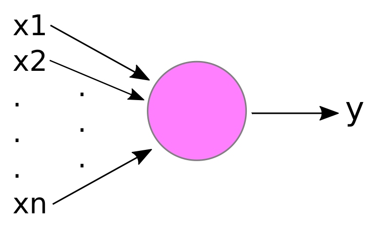
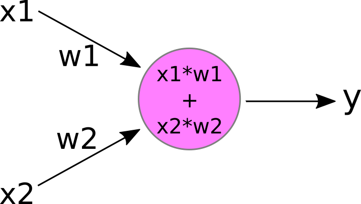
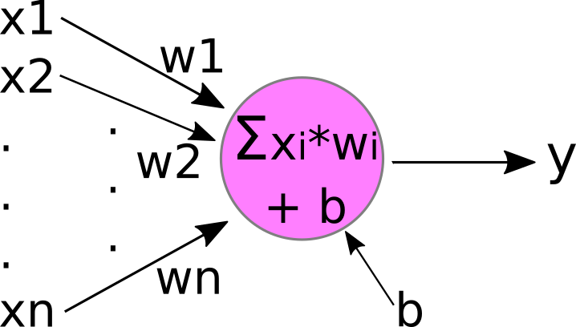
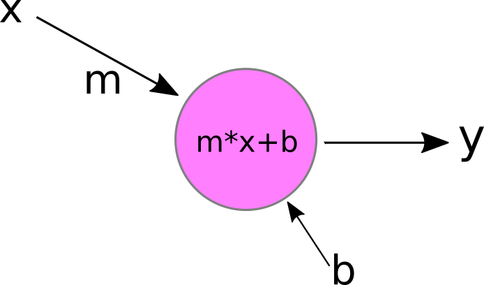

But, aren't neural networks 'magic'?
Nope. Just simple linear models.
Earlier we outlined the idea that all of classical statistics is just different ways to do linear modeling. While this is a little bit of an over-simplification, we can fix it using some statisical language: Nearly all of classical statistics can be approximated by linear models. If you'd like more information on this topic, please check out this web page on the subject, which covers quite a few of the most commonly-used statistical tests and includes examples with R code and links to additional information.
Just so we're all on the same page, recall that a "linear model" is just an equation of the form:
y = m * x + b
where y is the response variable, and x is the explanatory variable. In general, the simple linear model is a function that maps 'known' values of x (called the "independent variable") to corresponding 'unknown' values of y (called the "dependent variable", because the value of y 'depends on' the input value of x). For now, we can just think of x and y as real numbers (called "scalars"), but they don't have to be; they could be vectors, matrices, or tensors!
Remember that the simple linear model has two free parameters:
- m - the slope of the line
In our case, the slope m is just a number that indicates the change in the response variable (y), given a change in the explanatory variable (x). Mathematically, the slope can be written as:
Δy/Δx
or you may have seen it written as:(y1-y0)/(x1-x0)
for pairs (x0,y0), (x1,y1). Or, from calculus:dy/dx
These all mean the same thing in this case. But as we aren't mathematicians, we don't need to worry too much about notation. For our simple case, m is just a number that we'll need to fit to our data, although in the more general case the slope can be a vector, matrix or tensor. - b - the y-intercept
The y-intercept b is the value of y when x=0. This is often called the "bias" in the machine-learning or AI world. Again, in our example, b is just a number that will be fit to a specific training data set. In higher-dimensional problems, b could be a vector, matrix or tensor, but we'll get to that later.
An important thing to remember is that the simple linear model does not describe a line! The linear model describes an infinite number of lines; one for each possible value of m and b! For example, the lines
y = 2.5 * x + -12.3
and
y = -5.8 * x + 58.0
are different lines, but they are the same linear model, just with different values for the free parameters, m and b.
But, how does this relate to "neurons"
The basic "neuron" in an artificial neural network can be thought of as a simple 'computational unit' that accepts inputs and produces an output. Mathematically, a 'neuron' is just a function, then. A neuron is typically drawn like the figure below.
The inputs to this hypothetical pink neuron are labelled x1, x2,... xn, and the output is labelled y (hmm... sounds familiar?). In the figure, the vertical "..." just means that there can be 'any number' of inputs (ie, "n" can be any positive integer). Each input xi is 'attached' to the neuron by an incoming arrow (called an "edge" in network theory), and the output y is connected to the neuron by an outgoing arrow.
The purpose of the neuron is to apply some function to the collection of inputs, x1,x2,... xn, in order to produce the output y.
Theoretically, our neuron could apply any function to the inputs. While there are some 'fancy' neurons that apply fairly complex functions, in most cases y is a 'weighted sum' of the inputs x1,... xn. This is typically drawn like the image below.

Here, we've labelled each incoming edge with a "weight" w1, w2,... wn. And 'inside' the neuron, we multiply each input xi by its incoming weight wi, and then sum the results to produce the output y.
As an example, let's consider the following neuron with two inputs:
If we plug in some values for the weights and inputs:
w1 = 2.5 w2 = -1.0 x1 = 1.0 x2 = 0.5
Then we can calculate the neuron's output y as:
y = 1.0 * 2.5 + 0.5 * -1.0 = 2.5 - 0.5 = 2.0
This little pink neuron is very close to the "perceptron", the first artificial neuron model that still forms the basis for nearly all of the neurons used today! There is still one small bit that we need to add, the "bias":
Now our little neuron has a new free parameter, b, which it adds to the weighted-sum of the inputs x1,... xn. If you're still not convinced this is a linear model, let's simplify it a bit further to accept only a single input, x, and we'll change the name of the weight from "w" to "m":
That looks exactly like a simple linear model to me! And adding more inputs doesn't make the model non-linear; it just makes x and m vectors instead of scalars!
Those of you who have heard about "activation functions" might be thinking that I've over-simplified our neuron by leaving out the activation function. Don't worry, we'll get to activation functions in a little bit, so if you don't know what they are, you will soon enough! While many of the earlier explanations of artificial neurons include the activation function as part of the neuron, most folks nowadays think of the activation function as an additional component or transformation that is applied to the neuron's output y afterwards. Incidentally (or perhaps not), this is how activation functions are actually implemented - as an additional component separate from and applied after the neuron's output.
But activation functions aside for now; I hope I've convinced you that the "neuron" in a "neural network" is really just a simple linear model, although it can be linear in more than 2 dimensions!